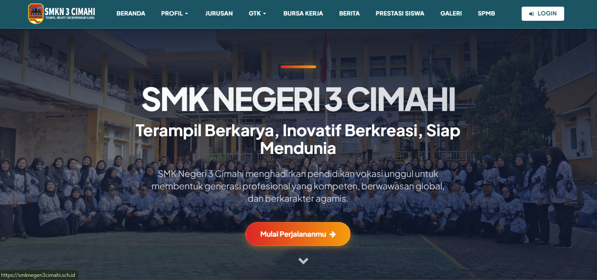
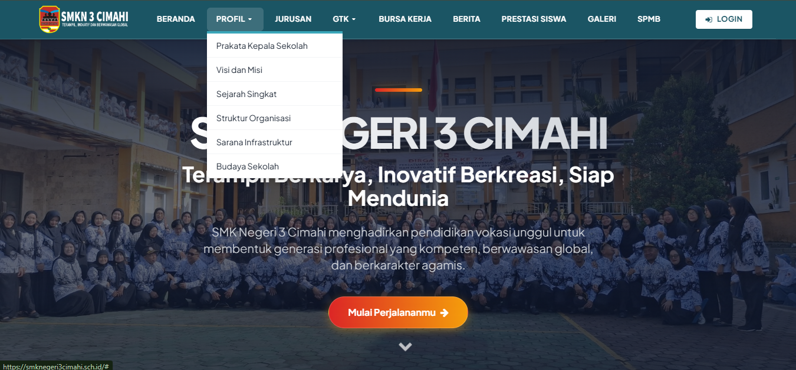
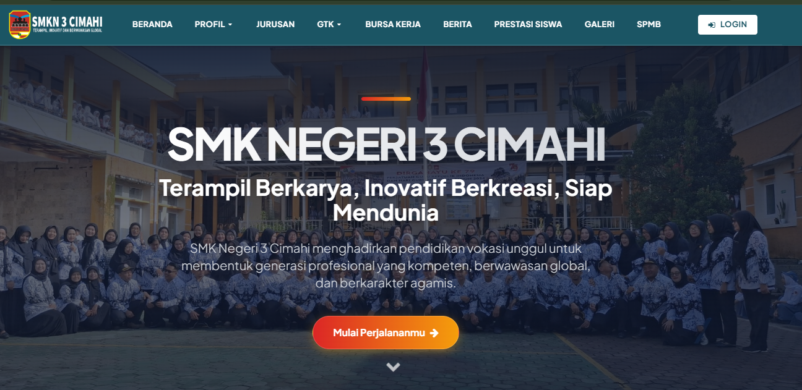
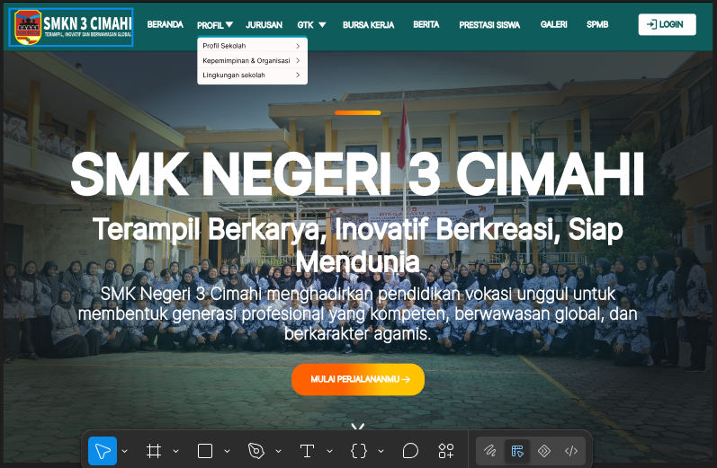
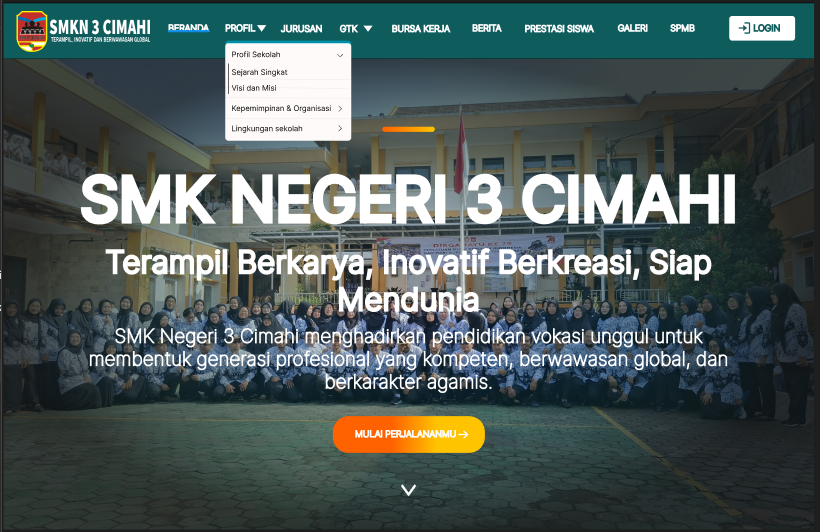
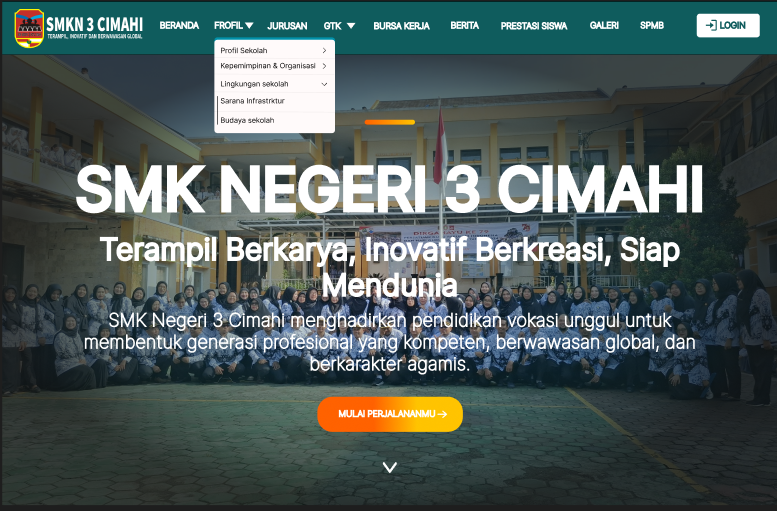

Evaluasi Navigasi Website Sekolah
Analisis temuan dari 11 task untuk memahami kemudahan pengguna menemukan informasi dan menyusun rekomendasi perbaikan navigasi.
Fokus evaluasi
Evaluasi ini meninjau seberapa mudah pengguna menemukan informasi pada website sekolah, mulai dari Beranda hingga Galeri. Secara umum informasi dapat ditemukan, tetapi beberapa bagian masih membutuhkan waktu atau terasa sedikit sulit bagi sebagian pengguna.
Temuan utama
Informasi pada menu Profil dan sejumlah halaman sekolah relatif mudah ditemukan. Budaya Sekolah, Beranda, dan Galeri masih memiliki skor yang lebih rendah dibanding beberapa task lainnya.
Arah perbaikan
Struktur submenu Profil perlu dikelompokkan dan ditampilkan dengan hierarki yang lebih jelas agar pengguna lebih cepat menemukan informasi yang dicari.
Informasi yang dievaluasi
Sebelas task mencakup Beranda, menu Profil beserta submenunya, Program Keahlian, Bursa Kerja, Berita, Prestasi Siswa, dan Galeri.
Analisis dan Temuan Masalah
Berikut ringkasan hasil dari setiap task, dengan skor dan catatan sesuai hasil evaluasi.
Task 1 — Beranda
Pengguna cukup mudah menemukan informasi umum, tetapi beberapa pengguna masih memerlukan waktu.
Task 2 — Profil
Menu Profil relatif mudah ditemukan.
Task 3 — Prakata Kepala Sekolah
Informasi mudah ditemukan melalui menu Profil.
Task 4 — Visi dan Misi
Informasi mudah ditemukan pada sub-menu Profil.
Task 5 — Struktur Organisasi
Informasi cukup mudah ditemukan.
Task 6 — Budaya Sekolah
Sebagian pengguna masih mengalami sedikit kesulitan.
Task 7 — Program Keahlian
Informasi jurusan mudah ditemukan.
Task 8 — Bursa Kerja
Informasi dapat diakses dengan cukup mudah.
Task 9 — Berita
Berita terbaru mudah ditemukan.
Task 10 — Prestasi Siswa
Informasi prestasi relatif mudah ditemukan.
Task 11 — Galeri
Dokumentasi sekolah cukup mudah ditemukan.
Rekomendasi Perbaikan
Rekomendasi berfokus pada pengelompokan submenu Profil agar isi website lebih mudah dipindai dan dipahami.
Kelompokkan submenu Profil
Bagi submenu ke dalam tiga kategori: Profil Sekolah, Kepemimpinan & Organisasi, dan Lingkungan Sekolah.
Tampilkan submenu secara bertumpuk
Tampilkan submenu di bawah kategori masing-masing agar hubungan antar-informasi terlihat lebih jelas dan mudah ditemukan.
Before & After
Perbandingan tampilan sebelum dan prototype setelah rekomendasi perbaikan diterapkan.
Before

Foto Before 1
before1.png

Foto Before 2
before2.png
After


Foto After 2
after-2.png

Foto After 3
after-3.png
Foto After 4
after-4.png

Foto After 5
after-5.png